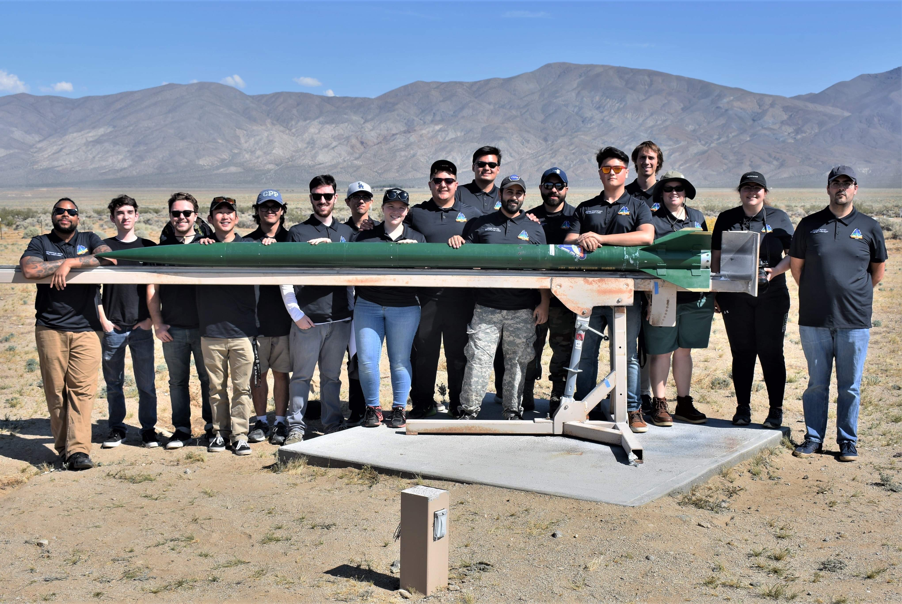
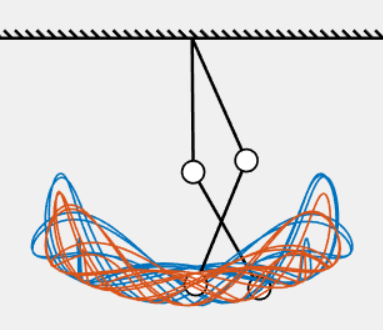
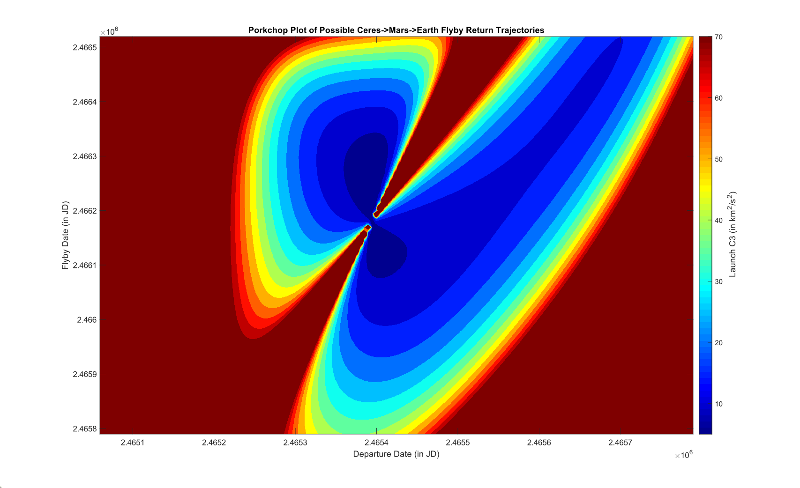
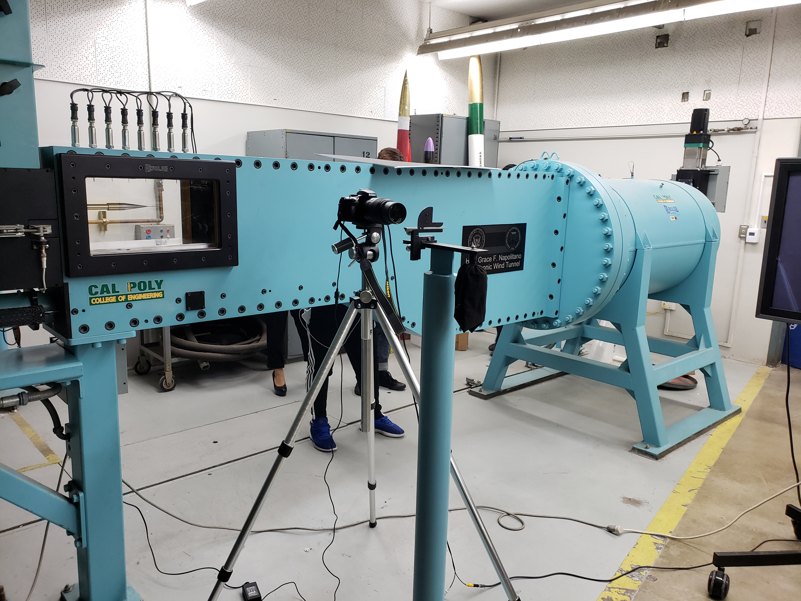

My other role was to design a new set of fins to withstand the near Mach 2 speeds the the rocket would be travelling. Due to our rocket being minimum diameter, meaning the motor casing was up against the skin of the rocket, the mounting system was also exposed to those same conditions. Any large mounting system would decrease the rockets maximum altitude dramatically, so the smallest, and therefore weakest, possible system was need.
After a years worth of work, and many manufacturing setbacks. The rocket was brought out to the Mojave desert to compete at FAR. Where it won First Place reaching a maximum altitude of 23,749 feet and a maximum speed of Mach 1.78.

With other functions that create springs, force arrows, trails, etc., it is possible to create and demonstrate motion of any dynamical system given their equations of motion. This helps build intuition on why certain systems react in the way that they do, and can be a helpful tool as a gateway into the field.

From there the spacecraft orbited in a sun-synchronous polar orbit while it collected the samples. Once that was complete, the spacecraft would follow the same trajectory and optimization in reverse, leaving Ceres to flyby Mars and arrive at Earth where it would deposit the sample.

For the Supersonic Wind Tunnel (SSWT), a series of tests were conducted on multiple shapes (cones, spheres, wedges, etc.) while varying the velocity from Mach 1.5 to Mach 3.6. Environmental variables were measured such as pressure drop before and after the test section and on the surface of the geometry. Also, Schlieren photography, Shadow Graphs, were take to verify the Mach readouts from the wind tunnel itself.
As for the Low Speed Wind Tunnel (LSWT), different airfoil shapes (2D and 3D) were tested to evaluate similar variables as the SSWT. One key difference between the tunnels is the possiblity to test aeroelasticity inside the LSWT. By using a wing that can change its angle of twist (at the tip and root), we can evaluate the different configurations in different circumstances. For example, at high speeds, the wing can flatten out for less drag in a cruise configuration, while at low speeds it can be shaped to generate more lift for landings and take-off.